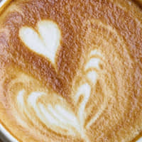
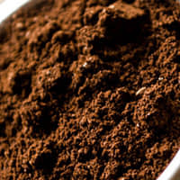
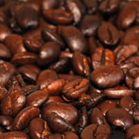
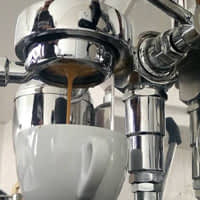
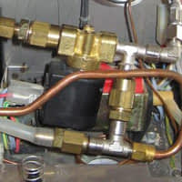

pro výrobu, přípravu a servírování té nejkvalitnější kávy. FIORENZATO, RENEKA, SAECO a LA SAN MARCO.
Provádíme zákaznický servis kávovarů(na vybrané modely), včetně jejich repase nebo výkupu. Po dohodě zajišťujeme servisní zásahy také u zákazníka.
Nabízíme prodej kvalitní italské kávy a bezkofeinových kapslí. Dále nabízíme ovocné, bylinkové, černé či zelené čaje té nejvyšší kvality.
Od roku 2000 se firma věnuje prodeji a servisu kávovarů značek FIORENZATO, RENEKA,SAECO a LA SAN MARCO a hledání vhodných řešení pro jednotlivce, kavárny, restaurace či hotelová zařízení. Naší snahou je dodat vždy vhodně dimenzované přístroje, které uspokojí požadavky Vás a vašich hostů.
Naše společnost se zabývá prodejem a následným servisem profesionálních i poloprofesionálních pákových nebo automatických kávovarů, z nichž některé jsou vhodné i pro domácí použití.
Automatické a poloautomatické kávovary
Vhodné do menších provozoven, kde není kladen důraz na rychlost výdeje kávy.
Pákové kávovary
Přístroje připravené pro náročný provoz. Díky důrazu na kvalitu, rychlost výdeje kávy, trvalé připojení ke zdroji pitné vody.
Čištění kávové, vodní a mléčné cesty
Nabízíme italské přípravky pro údržbu kávovarů značky Oemmeci, která je etalonem v oblasti chemických prostředků. Tyto přípravky dovážíme přímo z Itálie.
Detergent pro kapučinátory Oemmeci Terso-milk
Detergent pro vodní cestu Oemmeci Tersocal
Detergent pro kávovou cestu Oemmeci Tersonet
Máme více než 18 ti letou zkušenost s opravami, servisními zásahy a repasováním kávovarů, mlýnků na kávu. V rámci spolupráce s výrobci a distributory používáme originální nebo repasované náhradní díly dle požadavků zákazníka.
Zákazníkům nabízíme pouze takové zboží, na jehož prodej a servis jsme řádně proškoleni. Díky tomu jsme schopni okamžitě a flexibilně reagovat při jeho záručním i pozáručním servisu.
Po dohodě nabízíme servis přímo u zákazníka.
Závady, které si vyžadují komplexnější přístup vyřizujeme přímo u nás na prodejně, kde máme zařízenou servisní dílnu. Provádíme opravy kávovarů, opravu kávomlýnků, čištění kávovarů dle telefonické nebo osobní dohody. Některé závady vyřizujeme také na počkání.
Díky našim zkušenostem s kvalitnímu přístroji které prodáváme, víme že jejich životnost daleko přesahuje délku záruční doby. Je nám zcela jasné, že očekáváte od svého kávovaru 100% službu po dobu několika let a v některých případech i více jak deseti let. Aby váš kávovar zůstal v dobré kondici, je třeba věnovat mu patřičnou péči již během jeho provozu a nečekat, až se objeví první závada.
V tomto případě pro Vás nabízíme komplexní službu repase kávovarů značky La San Marco. Váš přístroj bude rozebrán, vyčištěn, zbaven vodního kamene, opotřebované díly budou opraveny nebo vyměněny. Zpět se Vám vrátí kávovar, který bude jako nový.
Jaké přídavné slovo se Vám vybaví když se bavíte o kvalitní kávě? Ano je to káva italská. Mistři svého umění, kteří kvalitu svých pražíren pilují již po generace a své zkušenosti předávají dál. Od takových mistrů pochází také káva nejvyšší třídy Ionia. Její výroba započala již v roce 1960 a za svou existenci se stala známou po celém světě. Stala se synonymem kvalitní italské kávy.
Ionia Gran Crema
Nabízíme prodej sicilské kávy Ionia z rodinné pražírny s dlouholetou tradicí. Zrnková káva, 1000g vakuově baleno. K dispozici kdykoli u nás na prodejně.
Sypané a porcované čaje Ahmad a London
Jako rozšířený sortiment nabízíme kvalitní čaje renomovaných značek. Ovocné, bylinkové, černé či zelené čaje té nejvyšší kvality. K dispozici u nás na prodejně.
Vaše káva je prostě úžasná. Už nedokážeme pít žádnou jinou. Každá návštěva si u nás pochutná a i lidé, kteří většinou místo kávy volí jiný nápoj si u nás IONIA kávu dají.
Radka Bayerová
Daniel Císař, Revoluční 185/43, Jablonec nad Nisou, 46601
IČ: 402 18 571, DIČ: CZ6709290962
+420 483 320 340, +420 603 497 690, cisar@tec.cz
Fyzická osoba zapsaná v Živnostenském rejstříku od 10.7.1991 Otevírací doba: Po-Pá 9.00 – 16.00